Nuclear Biology Hub
Explore nuclear biology through 62 indexed research review pages and 17 hypothesis reviews, microscopy galleries, and educational resources.
Owned and operated by Gnometrix Labs.
Hypothesis Reviews
Critical evaluations of foundational hypotheses in nuclear biology — weighing evidence, examining alternatives, and identifying what remains unresolved.
Chromatin Structure
- ▸30 nm Fiber In Vivo Debate
- ▸Chromatin Condensation: Intrinsic or Induced?
- ▸Nucleosome Dynamics
- ▸Chromatin Architecture & Dynamics

Genome Organization
- ▸Loop Extrusion Model: Evidence Review
- ▸TADs: Functional Units or Overstatement?
- ▸3D Genome Causality: Structure vs. Function
- ▸Chromosome Territory Architecture · LLPS & A/B Compartments
Phase Separation & Nuclear Bodies
- ▸LLPS in Nuclear Body Formation
- ▸Molecular Sink vs. LLPS Models
- ▸LLPS in DNA Damage Response
- ▸Paraspeckle · Epigenetic Memory · Beyond LLPS
Video explainers explore the evidence, competing models, and open questions. Availability varies by review; browse the gallery for the videos currently linked.
Watch videos →Professional Researcher Resources
Curated databases, analysis tools, protocols, literature feeds, consortia, community links, and funding entry points for nuclear biology researchers.
Databases & Portals
4DN, ENCODE, GEO, AlphaFold, ClinVar, BioImage Archive, and more.
Analysis Tools
Hi-C, ChIP/CUT&RUN, RNA-seq, ATAC-seq, proteomics, and imaging tools.
Protocols & Methods
Technique-specific protocol entry points and antibody validation resources.
Journals & Preprints
Primary journals, preprint searches, and review-series starting points.
Consortia
Large-scale nuclear biology and functional genomics projects.
Community
Societies, conferences, and a structure for a future lab directory.
Funding
US, Canadian, and international funding entry points.
Reading Levels
Pilot undergraduate and public explainers for selected review topics.
Research Review Categories
62 research review pages in the main index, organized across 8 topic categories
The index includes 59 core reviews and 3 additional editions. Six reading-level variants provide undergraduate and public introductions to selected topics.
Chromatin & Gene Expression
Explore chromosome condensation, chromatin biophysics, histone modifications, and gene expression regulation mechanisms
Featured Reviews (9 total):
Advanced Microscopy & Techniques
State-of-the-art imaging methods including 4D nucleome analysis, FIB-SEM ultrastructure, single-molecule tracking, FRAP, and live-cell microscopy
Featured Reviews (4 total):
Nuclear Bodies & Organelles
Comprehensive analysis of nuclear speckles, cajal bodies, paraspeckles, PML bodies, and nucleolus structure-function relationships
Featured Reviews (6 total):
Nuclear Structure & Dynamics
Nuclear envelope, lamina, pore complexes, and transport mechanisms governing nuclear organization and function
Featured Reviews (4 total):
Biophysics & Mechanics
Physical properties of the nucleus including viscosity, crowding effects, and mechanobiology of nuclear components
Featured Reviews (4 total):
Download Source Documents
Archived Word drafts remain unreconciled with revised HTML; scientific validation incomplete.
View Downloads